Project 3A: Image Warping and Mosaicing
Part A.1: Shoot the Pictures
All taken at Berkeley Way West.
Part A.2: Recover Homographies
Before warping your images into alignment, you need to recover the homography parameters.
The transformation is a homography: p’ = Hp, where H is a 3x3 matrix with 8 degrees of freedom
(lower-right corner is a scaling factor, set to 1). One way to recover the homography is via
a set of (p’, p) pairs of corresponding points from the two images.
Function implemented:
H = computeH(im1_pts, im2_pts)
where im1_pts and im2_pts are n-by-2 matrices holding the (x,y)
coordinates of corresponding points.
With n > 4, the system is overdetermined and can be solved via least-squares. Establishing
point correspondences is sensitive: small errors can produce large changes in the homography.
Typical methods include matplotlib's ginput, online tools, or image editors showing coordinates.
Correspondences Visualized
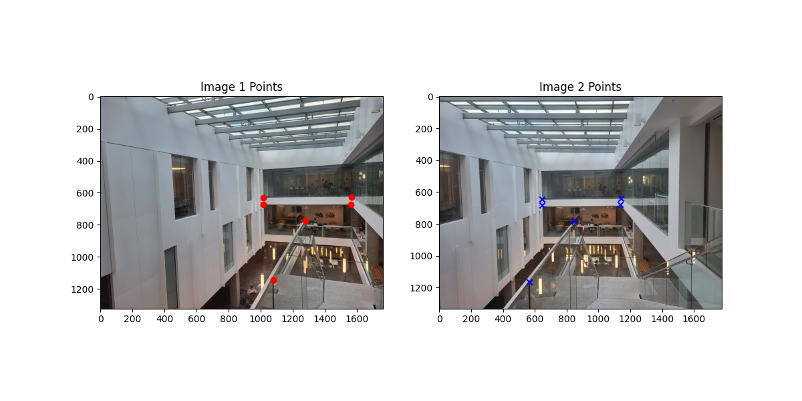
Point correspondences used to compute H
Recovered Homography Matrix
[[ 4.90792521e-01 -3.03338445e-01 1.61928810e+02]
[-9.46260426e-02 4.84863462e-01 2.56664447e+02]
[-1.41222136e-04 -2.10643213e-04 1.00000000e+00]]
Part A.3: Warp the Images
Using the recovered homography, we can warp each image towards a reference image.
Two interpolation methods were implemented from scratch using inverse warping:
- Nearest Neighbor Interpolation: Round coordinates to the nearest pixel.
- Bilinear Interpolation: Weighted average of four neighboring pixels.
These methods were applied for rectification and general warping. Trade-offs: Nearest neighbor is fast but blocky; bilinear is smoother but slower.
Big Topic Intro Image Pre-Warp
Big Topic Intro Warps
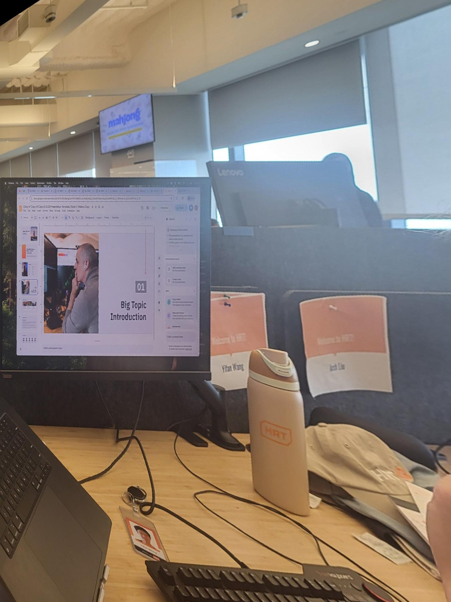
Nearest Neighbor Warp
Foam Room Image Pre-Warp
Foam Room Warps
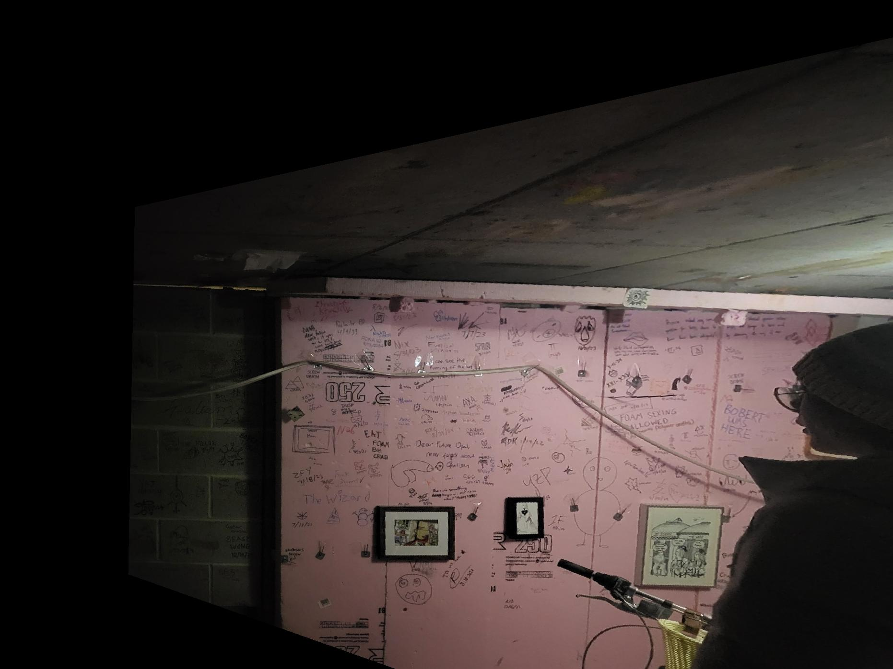
Nearest Neighbor Warp
Part A.4: Blend the Images into a Mosaic
After warping the images using the recovered homographies, we create mosaics to stitch multiple images
seamlessly. Instead of simply overlaying images—which can produce strong edge artifacts—we use a
blending approach based on weighted averaging.
Procedure:
-
Reference frame selection: Choose one image as the reference coordinate frame. All other images are warped relative to this reference.
-
Propagate homographies: For images left of the reference, chain the homographies from each adjacent pair to map them into the reference frame. For images right of the reference, propagate inverses of homographies similarly. This ensures all images are consistently aligned.
-
Compute canvas bounds: Transform the corners of all images using their respective homographies to determine the overall size of the mosaic canvas.
-
Warp images onto the canvas: Each image is warped into the canvas using bilinear interpolation. This preserves smooth transitions and reduces artifacts.
Blending: In overlapping regions, we apply feathered alpha blending.
As images are added, we feather the edges (50 pixels of the border) of the new image to create a smooth transition.
This weighted averaging is only applied to pixels that overlap with existing content on the canvas.
This creates smooth transitions between images, minimizing visible seams.
Mosaic Set 1: bww41, bww42, bww43 (with feathering example)
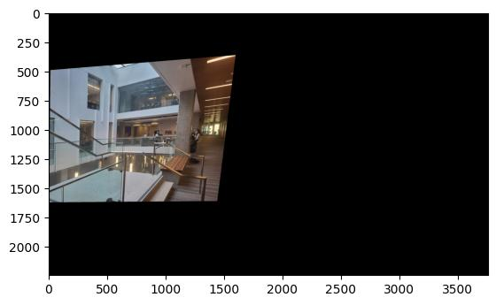
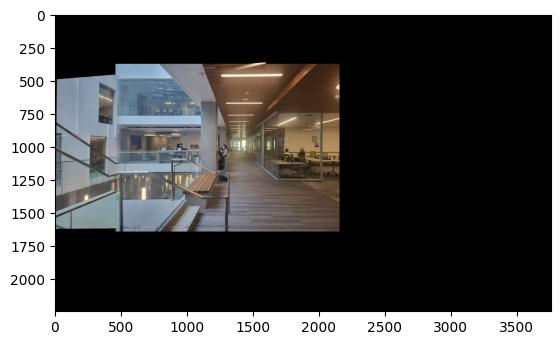
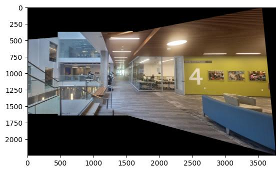
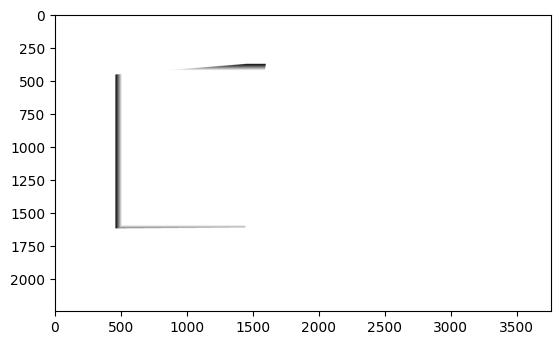
Feathered alpha masks
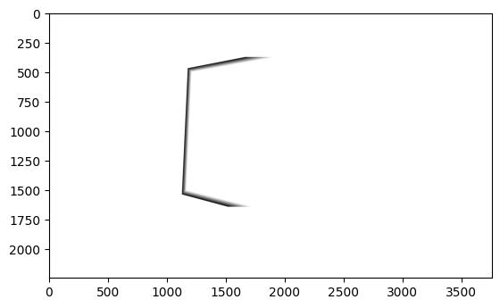
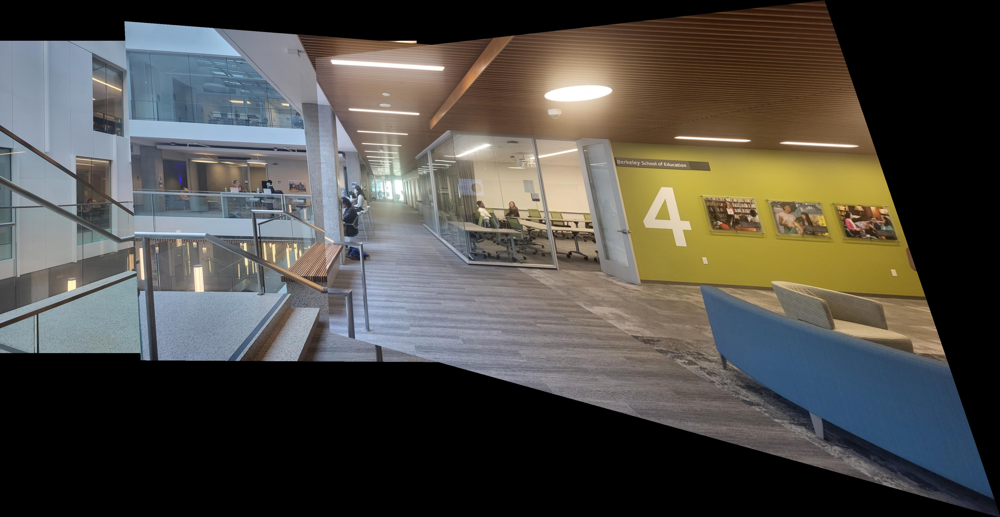
Mosaic Set 2: bair51, bair52, bair53
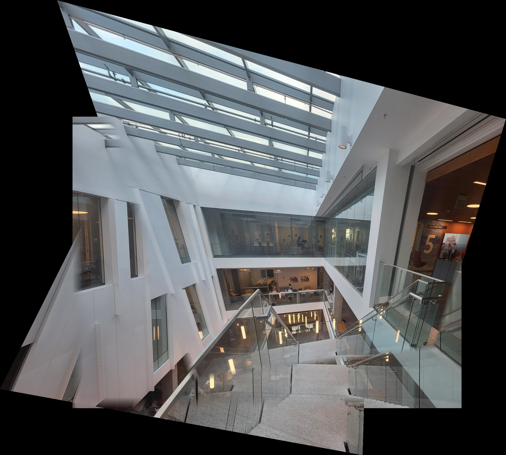
Mosaic Set 3: bww31, bww32
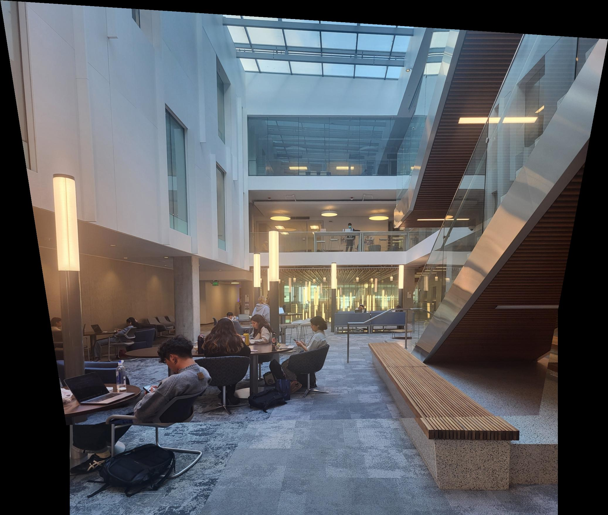
Project 3B: Feature Matching for Autostitching
Part B.1: Harris Corner Detection
Harris corners detected (single-scale) and ANMS-selected corners shown below.
Note that before suppression, there are many detected corners, as we take the max
"cornerness" over a 3x3 neighborhood. To make computation of ANMS manageable, we filter out points that have
below average cornerness. After applying ANMS (Adaptive Non-Maximal Suppression),
we select a more manageable number of well-distributed corners for descriptor extraction and matching.

Harris corners overlaid on bww31
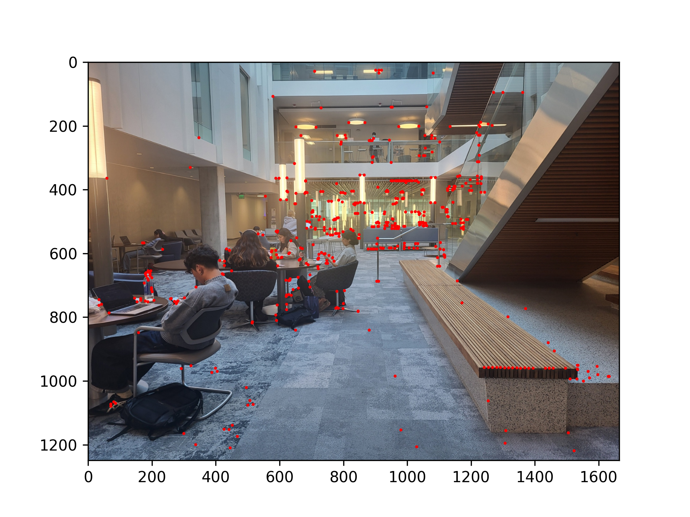
ANMS-selected corners on bww31
Part B.2: Feature Descriptor Extraction
Example extracted, bias/gain-normalized 8×8 descriptors (downsampled from 40×40 windows centered on each corner).
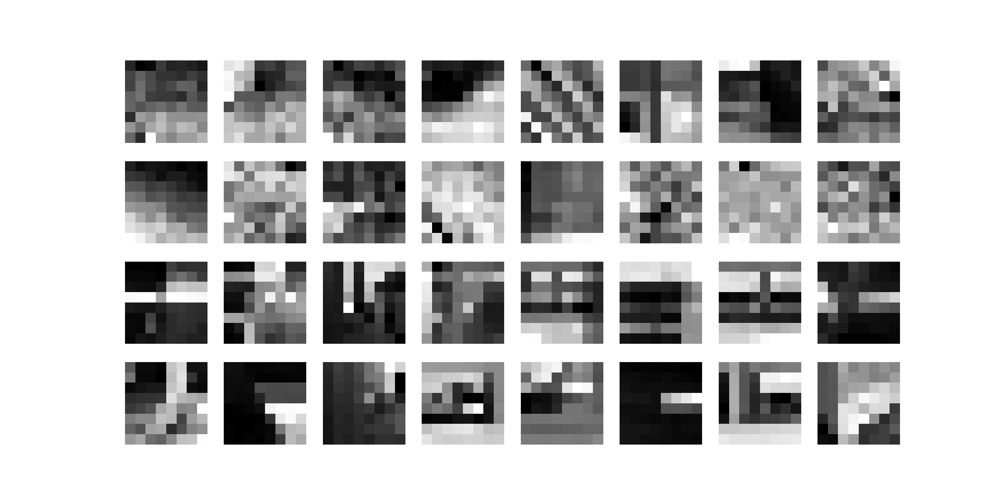
Sample feature descriptors from bww31 (8×8 visualizations)
Part B.3: Feature Matching
Matches between image pairs using Lowe's heuristic. I used a threshold of 0.5,
meaning the distance to the closest descriptor must be less than half the distance to the second-closest
descriptor to be considered a match.
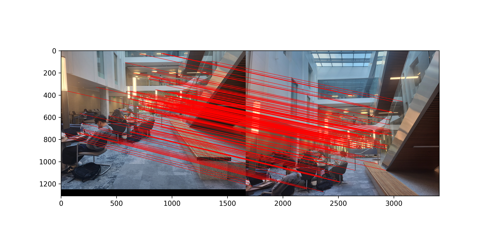
Matched features between bww31 and bww32
Part B.4: RANSAC for Robust Homography
4-point RANSAC used to compute robust homographies. Below: manual stitching vs automatic (RANSAC-based) stitching comparisons and automatic mosaics.
Manual vs Automatic Comparison
Manual mosaic (bww31, bww32)
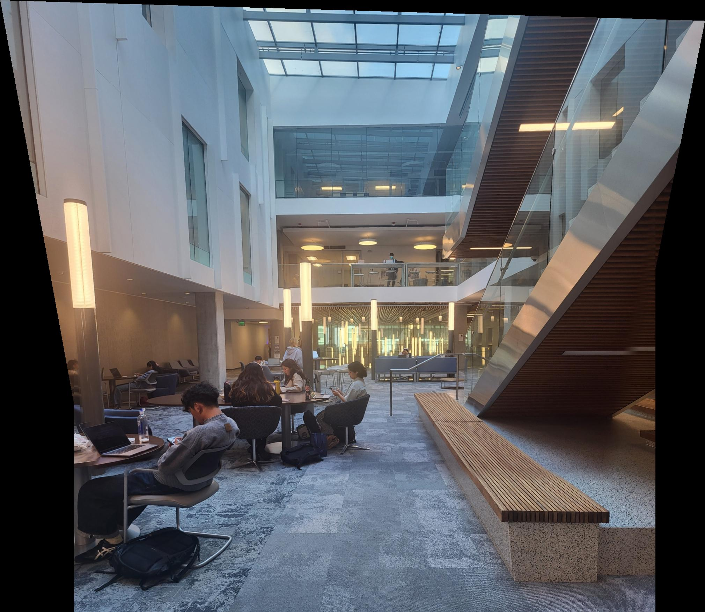
Automatic mosaic via feature matching + RANSAC (bww31, bww32)
Manual mosaic (bww41, bww42, bww43)
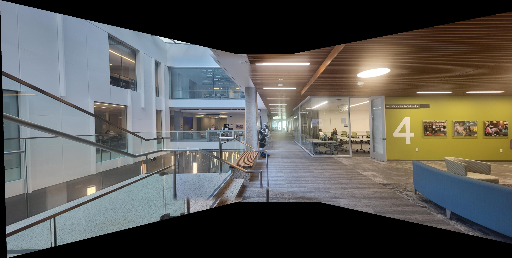
Automatic mosaic via feature matching + RANSAC (bww41, bww42, bww43)
Manual mosaic (bair51, bair52, bair53)
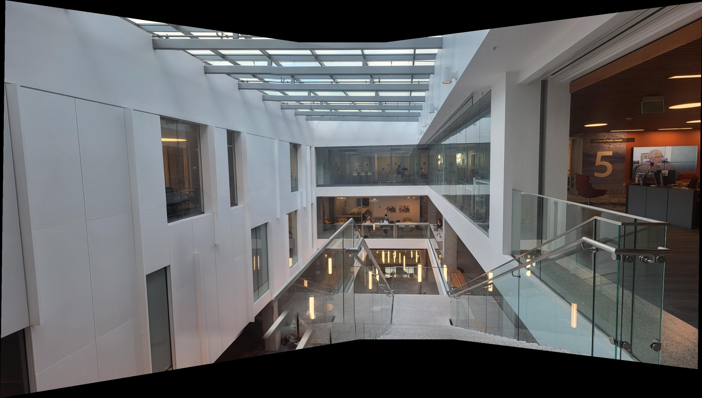
Automatic mosaic via feature matching + RANSAC (bair51, bair52, bair53)
Three automatic mosaics produced using the pipeline above (feature detection → descriptor extraction → NN-ratio matching → 4-point RANSAC → warp & blend).